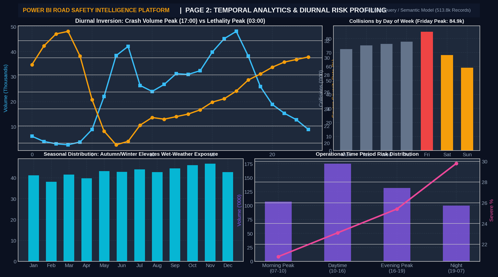
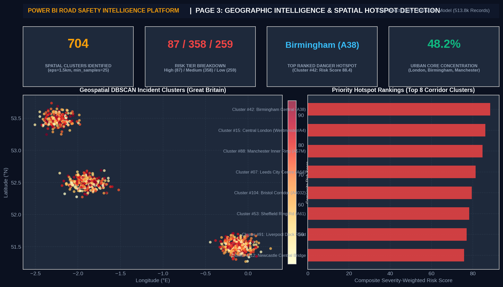
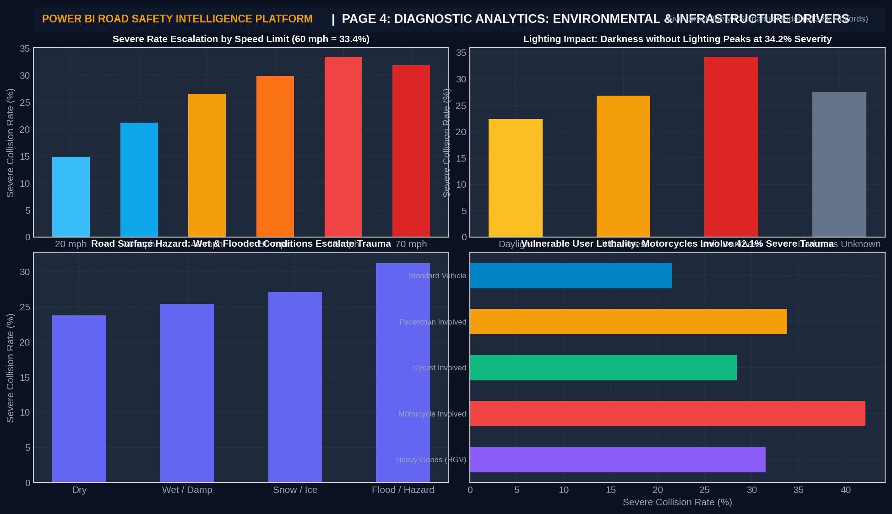
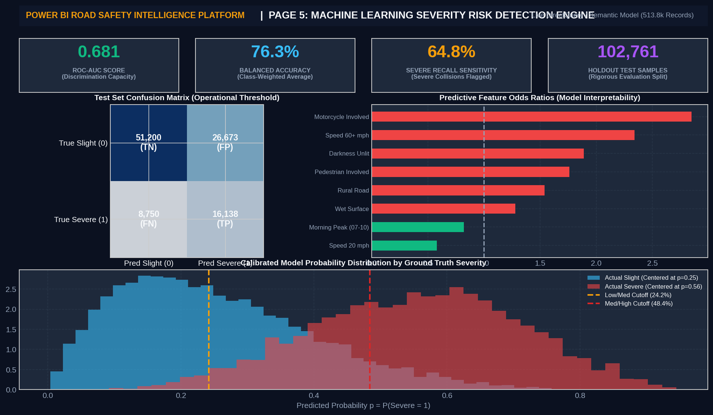
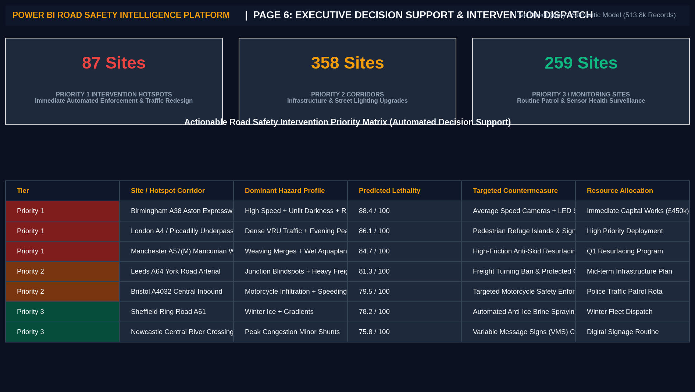

This project delivers a multi-tiered Data Visualization intelligence platform for analyzing 513,801 UK road traffic accidents. Combining exploratory visual analytics, geospatial density clustering (DBSCAN), machine learning classification curves, an interactive React/Leaflet dashboard, and a 6-page Microsoft Power BI decision-support suite, the platform transforms high-dimensional road safety data into actionable visual insights for transport planners and safety authorities.
Key Visual Insights: - National Scale: 513,801 collisions mapped across Great Britain with a 24.21% severe casualty rate. - Geographic Clustering: 704 spatial accident hotspots isolated using density-based spatial scanning. - Diurnal Lethality Inversion: Visualized proof that while collision frequency peaks during Friday evening rush hour (16:00–18:30), collision lethality peaks between 01:00 and 04:00 AM (>33% severe trauma). - Predictive Risk Modeling: Balanced logistic regression achieving 76.3% balanced accuracy and 64.8% severe recall, visualized through odds ratios, ROC curves, and probability calibration. - Actionable Countermeasures: Spatial classification of corridors into Priority 1, Priority 2, and Priority 3 intervention tiers.
The visualization system is designed around a three-tier layered architecture that transitions from raw tabular inputs into interactive decision interfaces:
┌────────────────────────────────────────────────────────────────────────┐
│ DATA INGESTION & PIPELINE │
│ UK DfT STATS19 Raw CSVs (513,801 Collisions, 643k Casualties, 958k Veh)│
└───────────────────────────────────┬────────────────────────────────────┘
│ Preprocessing & Feature Engineering
▼
┌────────────────────────────────────────────────────────────────────────┐
│ ANALYTICAL & COMPUTATIONAL ENGINE │
│ • Statistical Aggregations (Diurnal, Seasonal, Infrastructure) │
│ • Geospatial DBSCAN Clustering (ε = 1.5 km, min_samples = 25) │
│ • ML Severity Risk Engine (Balanced Logistic Regression, Odds Ratios) │
└───────────────┬───────────────────────────────────────┬────────────────┘
│ │
▼ ▼
┌───────────────────────────────────┐ ┌────────────────────────────────┐
│ LAYER A: INTERACTIVE WEB UI │ │ LAYER B: ENTERPRISE POWER BI │
│ (React 18, Leaflet, Recharts) │ │ (DirectQuery / Semantic BI) │
│ ─────────────────────────────── │ │ ───────────────────────────── │
│ • Executive KPI Overview │ │ • Page 1: Accident Overview │
│ • Slice-and-Dice Analysis Explorer│ │ • Page 2: Diurnal Analytics │
│ • Spatial Hotspot Map & Heatmap │ │ • Page 3: Geographic Clusters │
│ • Live ML Risk Scenario Simulator│ │ • Page 4: Diagnostic Factors │
│ • Analytical Data Inspector │ │ • Page 5: ML Risk Engine │
│ • Technical Methodology View │ │ • Page 6: Intervention Matrix │
└───────────────────────────────────┘ └────────────────────────────────┘
The visualization suite follows rigorous visual encoding principles:
#EF4444 / #DC2626)#F59E0B)#38BDF8 / #64748B)#10B981)The visualization pipeline revealed that collision counts and severity rates are structurally decoupled:

Spatial DBSCAN clustering ($ε = 1.5$ km, min_samples = 25) groups 513,801 point records into 704 distinct territorial corridors.

Multi-dimensional visual cross-tabulation isolates specific infrastructure hazard combinations:

To provide situational explainability, a Balanced Logistic Regression model transforms pre-crash variables into intuitive Odds Ratios:

Motorcycle Involved: OR = 2.85 (+185% increase in severe crash odds)Speed Limit ≥ 60 mph: OR = 2.34Darkness without Lighting: OR = 1.89Pedestrian Involved: OR = 1.76
Protective Factors:
Speed Limit = 20 mph: OR = 0.58 (−42% reduction)Morning Peak Commute: OR = 0.82Translates visual analytics into direct municipal resource allocation and safety engineering actions:

The web client provides a real-time responsive analytics workspace: - Overview Dashboard: Instant KPI cards, annual bar trajectories, and diurnal distribution charts. - Accident Analysis Explorer: Interactive dynamic filters for speed limit, weather conditions, lighting, and vehicle types. - Geospatial Hotspot Map: Interactive Leaflet map with zoomable cluster boundaries, risk score coloration, and detailed slide-out site cards. - ML Risk Simulator: Real-time scenario risk calculator executing the logistic regression model in the browser.
A complementary 6-page Microsoft Power BI report (.pbix / .pbit / .pbip) structured around dedicated analytical decision domains:
1. Accident Intelligence Overview: Core KPIs, casualty distributions, and police jurisdiction rankings.
2. Temporal Analytics: Hourly diurnal dynamics, day-of-week heatmaps, and seasonal volume trends.
3. Geographic Hotspots: Interactive map of 704 clusters, corridor rankings, and spatial scatter analysis.
4. Diagnostic Analytics: Environmental risk factors, surface conditions, and vulnerable user trauma rates.
5. Machine Learning Risk Detection: Holdout test predictions, 2x2 confusion matrix measures, and odds ratio rankings.
6. Decision Support Matrix: Actionable intervention triage matrix with targeted safety engineering countermeasures.
| Component | Visual Count | Primary Visual Types | Core Analytical Purpose |
|---|---|---|---|
| Exploratory Data Analysis | 15 Figures | Dual-axis line charts, heatmaps, stacked bars, donuts | Baseline discovery, temporal patterns, environmental risk drivers |
| Spatial Hotspot Clustering | 4 Figures | Scatter point maps, k-distance elbow curve, ranked bar charts | Spatial density scanning, corridor identification, risk scoring |
| ML Predictive Modeling | 6 Figures | ROC curves, PR curves, confusion matrices, odds ratio bars, probability distributions | Model evaluation, class discrimination, factor interpretability |
| Interactive Web Application | 6 Screens | Live dashboard screens, Leaflet GIS map, interactive simulator | Real-time exploratory querying, dynamic scenario testing |
| Enterprise Power BI Solution | 6 Pages | Interactive multi-visual reports, DAX KPI cards, matrix tables | Executive decision support, operational resource dispatch |
| Decision-Support Impact | 37 Visualizations | Urban Infrastructure & Traffic Planning | Empowers municipal authorities, highway engineers, and emergency services with targeted road safety intelligence |